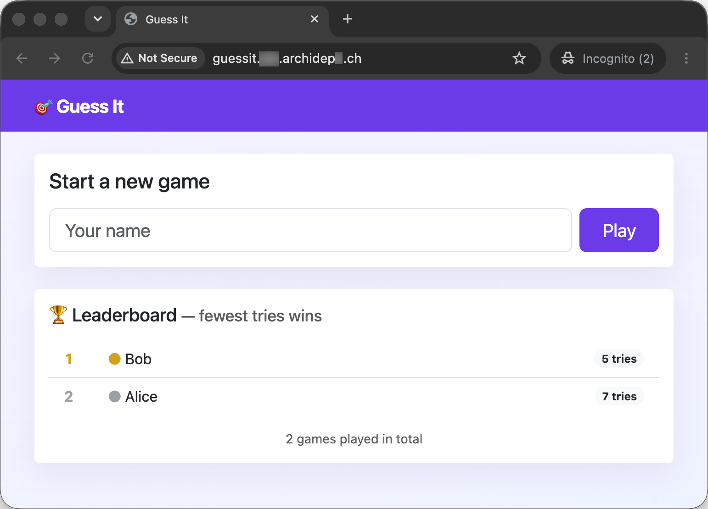

Connect to your cloud server with SSH for this exercise.
Deploy a web application with nginx as a reverse proxy
The goal of this exercise is to put nginx in front of Guess It, as a reverse proxy, so that Guess It is reached by a name of its own, with no port in the address. nginx will serve it on port 80, beside the clock you deployed in the previous exercise. Guess It itself does not change: systemd keeps running it on port 3000.
On this page
Table of contents
 Legend
Legend
Parts of this exercise are annotated with the following icons:
-
 A task you MUST perform to complete the exercise
A task you MUST perform to complete the exercise
-
 Optional step that you may perform to make sure that
everything is working correctly, or to set up additional tools that are not required but can
help you, or optional extra exercises to explore the topic further
Optional step that you may perform to make sure that
everything is working correctly, or to set up additional tools that are not required but can
help you, or optional extra exercises to explore the topic further
-
 Advanced tips on how to go further (or
challenges!)
Advanced tips on how to go further (or
challenges!)
 The end of the exercise
The end of the exercise-
 The architecture of the software you ran or
deployed during this exercise
The architecture of the software you ran or
deployed during this exercise
-
 Troubleshooting tips: how to fix common problems you might
encounter
Troubleshooting tips: how to fix common problems you might
encounter
Requirements
Make sure you have completed the previous exercise first: nginx must be installed, and serving the clock. You also need Guess It running as a systemd service, as in the systemd exercise. Check that it is:
$> sudo systemctl status guessit
● guessit.service - Guess It
Loaded: loaded (/etc/systemd/system/guessit.service; enabled; preset: enabled)
Active: active (running) since Thu 2026-11-12 09:42:26 UTC; 1h 3min ago
... Choose the name of the site
Like the clock, Guess It gets a name of its own: guessit. followed by the
hostname you noted in the DNS exercise. For example, if your
hostname is jde.archidepN.ch, Guess It will be at guessit.jde.archidepN.ch.
You do not need to add a DNS record for it. Your wildcard record, *.jde,
already points every name under your hostname to your server.
Create an nginx configuration file to serve the application
Create an nginx configuration file named guessit in nginx’s
/etc/nginx/sites-available directory, as you did for the clock, with sudo nano.
Take the reverse proxy configuration example from the course and put it in the file. You must modify it to:
- Use the name you chose for the site, such as
guessit.jde.archidepN.ch, in theserver_namedirective. - Forward the requests to the address where Guess It listens, with nginx’s
proxy_passdirective. Guess It runs on the same server as nginx, so the address is the server’s own loopback address,127.0.0.1, followed by the port Guess It listens on.
Unlike the clock’s, this configuration has no root directive. nginx has no
files of Guess It to send: Guess It builds every page itself, so nginx must
forward every request to it.
Enable the nginx configuration
Enable the guessit configuration by creating the correct symbolic link:
$> sudo ln -s /etc/nginx/sites-available/guessit /etc/nginx/sites-enabled/guessitMake sure the symbolic link points to the correct file:
$> ls -l /etc/nginx/sites-enabled/guessit
lrwxrwxrwx 1 root root 34 Nov 12 10:51 /etc/nginx/sites-enabled/guessit -> /etc/nginx/sites-available/guessit Reload the nginx configuration
Check whether the changes you have made are valid, then tell nginx to reload its configuration:
$> sudo nginx -t
nginx: the configuration file /etc/nginx/nginx.conf syntax is ok
nginx: configuration file /etc/nginx/nginx.conf test is successful
$> sudo systemctl reload nginx See it in action
Visit the name of the site in your browser, e.g.
http://guessit.jde.archidepN.ch (with your own hostname after guessit.). You
should see Guess It, with the games won on your earlier deployments in its
leaderboard, and no port in the address.

Visit the clock too, e.g. http://clock.jde.archidepN.ch: it still works. The
same nginx serves both, on the same port 80.
Stop Guess It behind nginx’s back
Stop Guess It, but not nginx:
$> sudo systemctl stop guessitReload Guess It in your browser. You get an error page that says 502 Bad Gateway, with nginx under it. Reload the clock: it still works.
Guess It is not running, yet you got an answer. Who sent you this error page, and why?
nginx did. It is still running, and still listening on port 80, so it received
your browser’s request as before. It tried to connect to Guess It at
127.0.0.1:3000 to forward the request, but nothing listens on that port any
more, so the connection was refused. nginx could not get a page from Guess It,
so it answered the browser itself, with a 502 Bad Gateway error: the
application it proxies to failed.
Its error log says so:
$> sudo tail -n 1 /var/log/nginx/error.log
... [error] ... connect() failed (111: Connection refused) while connecting to upstream, client: ..., server: guessit.jde.archidepN.ch, request: "GET / HTTP/1.1", upstream: "http://127.0.0.1:3000/", ...The upstream is what nginx calls the application it proxies requests to.
The clock does not need Guess It, so nginx keeps serving it.
Start Guess It again, and reload it in your browser, which should show the game again:
$> sudo systemctl start guessit Find out who listens on port 80
Guess It runs as the guessit user, which you created in the systemd
exercise. nginx listens on port 80, one of the well-known
ports. Which user do you think nginx must have been started
as to listen on it?
Check your answer by listing the processes of nginx (-C nginx selects the
processes whose command is nginx):
$> ps -f -C nginxThe command shows something like this:
$> ps -f -C nginx
UID PID PPID C STIME TTY TIME CMD
root 812 1 0 09:41 ? 00:00:00 nginx: master process /usr/sbin/nginx -g daemon on; master_process on;
www-data 11024 812 0 10:52 ? 00:00:00 nginx: worker process
www-data 11025 812 0 10:52 ? 00:00:00 nginx: worker processYou may have a different number of worker processes: nginx starts one per processor core by default.
nginx must start as root: on Linux, only root may listen on a port below 1024. systemd, which runs as root, started the master process of nginx
when the server booted, and it is still running as root. It opened port 80.
The master process does not handle requests itself. It starts worker
processes, its children (their parent PID is the master’s PID), which run as
the www-data user, as the user www-data; line of /etc/nginx/nginx.conf
says. They are the ones that read the clock’s files, and connect to Guess It.
What have I done?
You have put nginx in front of Guess It as a reverse proxy. A browser now
reaches Guess It by a name of its own, with no port in the address. Guess It
itself has not changed: systemd still runs it, as the guessit user, on port 3000.
nginx receives the browser’s request on port 80, and proxies it to Guess It
on 127.0.0.1:3000, which is your server talking to itself. For Guess It, nginx
is a client like any browser. nginx then sends Guess It’s answer back to the
browser. There are two HTTP connections, one from the browser to nginx and one
from nginx to Guess It: a browser that uses Guess It’s name never talks to Guess
It directly.
nginx and Guess It are separate processes. When Guess It was stopped, nginx was
still there to receive the request, and answered with a 502 Bad Gateway error
of its own, while the clock went on working.
For the clock, nginx sends files it reads from disk, which is what root tells
it. For Guess It, there are no files to send: Guess It builds every page when it
is asked for it, so the configuration has proxy_pass instead.
Only one process can listen on a given port. If Guess It listened on port 80
itself, there would be no room on that port for the clock, or for any other
application: that is the problem of multiple production deployments on one
server, one of the flaws listed in How to improve our basic
deployment. nginx solves it by holding port 80 for every site, and
sending each request to the right one by the name in its Host header. Guess It
and the clock now share it, and any number of other applications can join them:
each listens on a port of its own, which nobody types, and gets a configuration
in nginx with a name of its own.
Port 80 is a well-known port, which only root may listen on. Serving Guess It
on port 80 without nginx would mean running it with sudo, as root, and
undoing what its dedicated user protects. nginx handles this for you: its master
process starts as root to open the port, and its worker processes, which do
the actual work, run as www-data. Guess It keeps listening on port 3000, which
any user may do.
Several flaws of the basic deployment are now fixed: Guess It has a domain name, no port in its address, and shares the server with other sites. One flaw of that list remains: Guess It is still served over HTTP, not HTTPS, and browsers mark it as not secure.
Architecture
This is a simplified architecture of the main running processes and communication flow at the end of this exercise. Unlike in the systemd exercise, the browser does not connect to Guess It: it connects to nginx, which connects to Guess It. Step through the diagram to see what happens when a browser requests Guess It’s home page.
In this diagram, a browser reaches Guess It by a name of its own, guessit.jde.archidep2.ch, with no port in the address. nginx listens on port 80 and forwards the request to Guess It on port 3000, which talks to PostgreSQL. systemd, the init process, started all three when the server booted.
systemd, the init process, started PostgreSQL, Guess It and nginx when the server booted. nginx listens on port 80, with the configurations of the clock and of Guess It enabled. Guess It listens on port 3000. Your wildcard DNS record, *.jde, points guessit.jde.archidep2.ch to your server’s public IP address.
Someone opens a browser on their computer.
They type Guess It’s address into the browser, with no port. The browser looks up guessit.jde.archidep2.ch in the DNS, which answers with your server’s public IP address, from your wildcard record.
With no port in the address, the browser connects to port 80, the default port of HTTP, at your server’s public IP address. nginx is listening there, not Guess It.
The browser sends an HTTP request for the home page over the connection, with the name it was given in its Host header, and waits for the answer.
nginx works: it picks the configuration whose server_name is the name in the Host header. That configuration has no files to send: it says to proxy the request to http://127.0.0.1:3000.
nginx connects to Guess It on port 3000, at 127.0.0.1, the server’s own loopback address. For Guess It, nginx is a client like any browser.
nginx sends the browser’s request on to Guess It, and waits for the answer.
Guess It works: Node.js runs its JavaScript code, which needs the leaderboard from the database.
Guess It connects to PostgreSQL on port 5432, with the database URL systemd gave it from its configuration file.
Guess It sends its query over the connection.
PostgreSQL works, running the query, while Guess It waits for the answer.
The rows of the leaderboard travel back to Guess It.
Guess It works again, building the HTML page from the rows.
The page travels back to nginx, over the connection nginx opened.
nginx sends the page on to the browser, over the browser’s connection. The browser never talked to Guess It.
The browser works, displaying the page.
Note
Note that this diagram simplifies nginx by showing only one process, while in reality it has a master process and several worker processes, but this is sufficient to understand the architecture.
 Where is everything?
Where is everything?
These are the files and directories of your server that matter for this deployment.
| Path | What it is | What you did | Who uses it |
|---|---|---|---|
/etc/nginx/sites-available/guessit new |
The configuration of Guess It: its name, and the address to forward its requests to | Wrote it with sudo nano |
nginx, through the link in sites-enabled |
/etc/nginx/sites-enabled/guessit new |
A symbolic link to the configuration of Guess It, which enables it | Created it with sudo ln -s |
nginx, which includes everything in sites-enabled |
/etc/systemd/system/guessit.service |
The unit file of Guess It, which runs it on port 3000 as the guessit user |
Stopped and started the service with systemctl |
systemd, to run Guess It, which nginx forwards requests to |
/var/log/nginx/error.log |
The errors nginx has met, such as an upstream it could not connect to | Read it while Guess It was stopped | You, to find out why nginx answers with an error |
/srv/guessit is not in this table: nginx never reads Guess It’s files, unlike
those of the clock in /srv/clock. Only Guess It does.
You can explore all of this yourself: ls -l shows what a directory contains,
with its permissions, and cat, head and tail what a file contains, as in
the command line cheatsheet. Use sudo for what only
root can read. For example:
# The configurations nginx has enabled, and where their links point.
$> ls -l /etc/nginx/sites-enabled
# The processes of nginx, and the users they run as.
$> ps -f -C nginx Troubleshooting
Here’s a few tips about some problems you may encounter during this exercise.
[emerg] could not build server_names_hash, you should increase server_names_hash_bucket_size
Your domain name is too long for nginx’s default settings. Fix it as in the same problem in the static site exercise.
I see nginx’s welcome page instead of Guess It
nginx has no enabled configuration with the name in your browser’s address bar, so it answers with its default site. Check that:
- The address is the name of the site, with
guessit.in front of your hostname. - The
server_namedirective in/etc/nginx/sites-available/guessitis exactly that name. - The symbolic link
/etc/nginx/sites-enabled/guessitexists and points to your configuration (ls -l /etc/nginx/sites-enabled). - You have reloaded nginx’s configuration since your last change.
502 Bad Gateway
nginx received the request, but could not get an answer from Guess It. Look at the end of nginx’s error log:
$> sudo tail /var/log/nginx/error.logIf it says connect() failed (111: Connection refused) while connecting to upstream, nothing listens at the address of your proxy_pass directive:
- Check that Guess It is running with
sudo systemctl status guessit, and start it withsudo systemctl start guessitif it is not. If it does not start, see the troubleshooting of the systemd exercise. - Check that the address in
proxy_passishttp://127.0.0.1:3000, the port Guess It listens on, assudo systemctl status guessitshows on its last line.